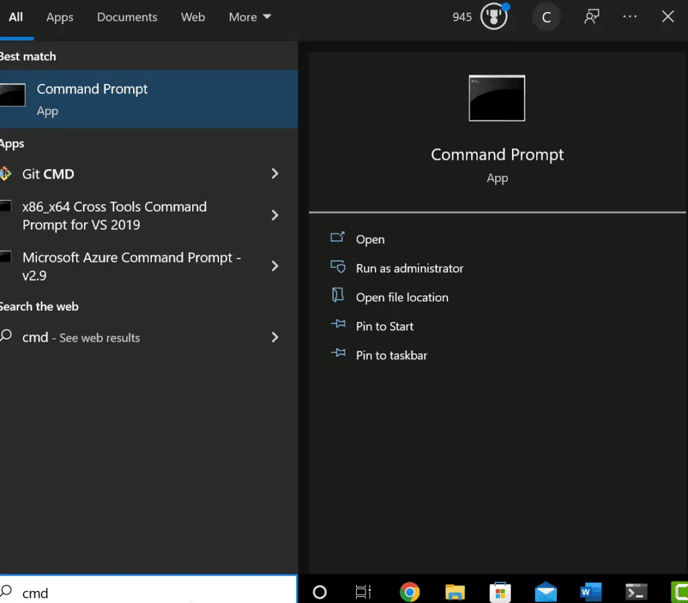
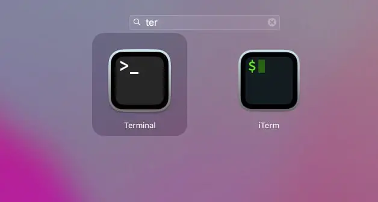
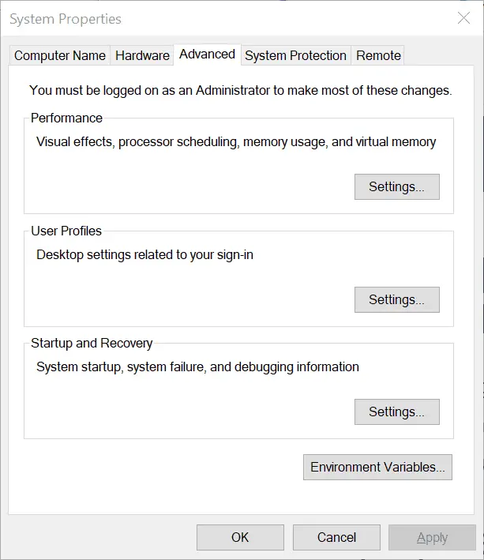
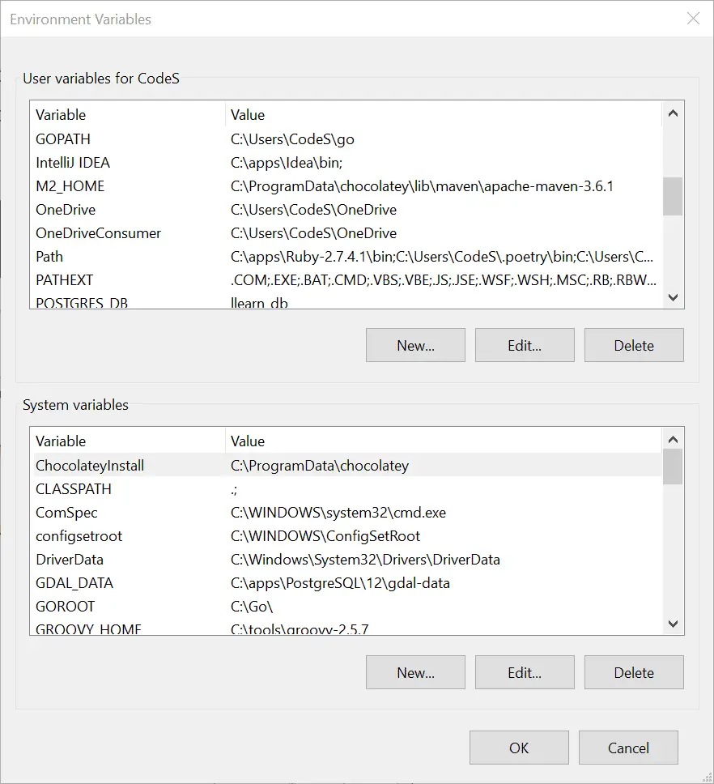
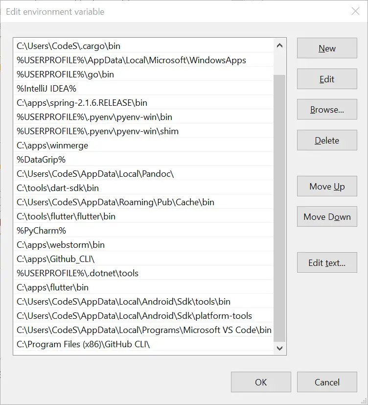

I firmly believe that every software developer should know how to use the command line. At the same time that this is my position, it feels strange to have to advocate for it since the alternative of ignoring the command prompt altogether is a very recent development.
For us dinosaurs born in the last century, the command line was the computer’s interface, so using a computer without knowing the command line wasn’t an option. My first computer didn’t come with a mouse. The user interface looked like this:
A:\
It wasn’t a badge of honor to learn the command line back then – any more than being able to swipe a phone makes you a rock star today. It was just an essential skill you needed to use the device.
Things are different now, of course. Most of the programmers I work with today grew up with graphical user interfaces: Windows, macOS, and even Linux all feature excellent interfaces that make my old A:\ prompt look as quaint as a rotary dial phone.
However, for all the convenience of windowing interfaces, I’ve only met two developers during a long career who were utterly ignorant of how to get around in a command line (or “terminal,” as it’s also called). Most developers are also quite adept at using a computer generally, including knowing their way around a terminal.
In the sections that follow, we’ll begin with a list of core command-line skills that we want to cover. For completeness, I’ll discuss both the Windows “cmd” version of the command line and the terminals like bash. You’ll notice that I’m not planning to cover Windows PowerShell. Though it’s quite powerful and certainly worthy of discussion if you’re planning a career as a Windows system administrator, I don’t know it well enough to do it justice.
Table of Contents
The Core Command Line Skills
Starting a Terminal Session
Opening a Command Prompt From Your Computer
Opening a Command Prompt From Your Editor or IDE
Navigating the File System from the Command Line
Where Am I?
Creating Folders and Moving Around
Navigating to Your Home Directory from the Command Line
Working With Environment Variables and Setting the Path
Adding a Path to the User Path on Windows
Adding a Path to the User’s Path on Mac or Linux
Exploring Folders and Files and Their Contents
Copying and Moving Files and Directories
Listing All Files and Discovering Shell Configuration Files
Creating and Running Basic Command Line Programs
Windows Batch Files
Getting Help for Command Line Tools
Most Useful Shell Commands: Windows vs. Mac and Linux
The Core Command Line Skills
Here are what I consider the top command-line skills you should master:
Navigating and managing folders. Having known and easy-to-use locations for your files and repositories.
Setting the PATH variable to manage what programs you can launch from the command line by default. That is to say, given a program you’ve installed, you should generally be able to run it from the command line.
Listing folder contents and locating files in subfolders, either based on name or contents.
Listing file contents and re-directing program output.
Writing simple shell scripts or batch files to automate tasks. I’m not talking about advanced bash, CMD, or PowerShell scripts here, just basic task launchers. One could also write aliases in place of simple scripts (depending on the environment).
Setting and using environment variables.
Running career-relevant command-line tools. In Python, of course, that means python and pip, and perhaps conda, not to mention being able to launch pip-installed tools like Jupyter notebook or IPython. (For front-end folks, we could talk about tools like npm, node, yarn, etc.). Top on my list of career-agnostic tools would be git and – optionally –
gh(the GitHub command-line tool). You should be able to run other tools as needed, such as the AWS command-line interface.
With that list to guide us as a broad outline, let’s begin a whirlwind tour of the basics. There are many types of command terminals available to us, and because of this, we’re going to have to be a bit selective about what we cover. For Mac and Linux, I will discuss commands that will generally work on two popular shells: bash and zsh. There are some subtle differences between the two, but we won’t need to discuss the differences in much detail, especially at the beginner level.
On Windows, these same “bash” commands will also work on WSL (Windows Subsystem for Linux) and in git bash. I’ll also discuss some basics of the Windows command-line interface, “cmd.” For serious work in the terminal on Windows, however, I recommend using git bash. WSL is also quite good, but it makes integrating other Windows programs a bit more complicated.
Starting a Terminal Session
Opening a Command Prompt From Your Computer
To get to a command line terminal, you should have by default, from the Windows search bar, you can type “cmd” to locate the “Command Prompt” application. Running this will open a command-line terminal.

On the Mac, use Launchpad and search for “term” to find and run the terminal program, as shown here below: (You probably won’t see ITerm, unless you’ve installed it separately).

On Linux, you’d also search for “Terminal,” but the way you locate programs depends on the distribution.
One of the first things I do on a new computer once I’ve run a command line terminal for the first time is to right-click on the icon of the running terminal, then select “Pin to taskbar” (Windows) or “Options / Keep in Dock” (Mac). This way, I’ll always have a terminal program handy.
Opening a Command Prompt From Your Editor or IDE
It’s also a good idea to understand how to open a command-line terminal from your editor or IDE. In Visual Studio Code, you can reach for the Terminal menu item, or from the keyboard, use CTRL-SHIFT-`. (That’s a “backtick” key, typically above the tab key). In PyCharm, you’ll reach for Alt-F12 on Windows or Option-F12 on the Mac. You can also get there through the much longer menu sequence “View / Tool Windows / Terminal.” In Jupyter Lab, you can open a terminal via the menu sequence “File / New / Terminal.” As far as I know, you don’t have a separate terminal available in Jupyter Notebook.
Working With Environment Variables and Setting the Path
The operating system on your computer launches a command-line terminal program (or any other program) with a default set of environment variables. These are key-value pairs that store important information. When we used the command cd %HOMEPATH% in the last section on Windows, we said, in effect, “change directory to directory stored in the environment variable called HOMEPATH.”
One of the most important environment variables is the “PATH” variable, which is set to a list of directories, separated either by colons (Mac) or semi-colons (Windows). Generally speaking, outside of some system defaults, you can run a program easily if it’s located on your PATH. Otherwise, you have to type the whole path to the program to run it, and terminal-wielding cool kids like us HATE typing long paths.
To find out if a program is runnable, you can generally try something like this on any system:
program-name --version
You should get information about the program if it’s available; if not, you’ll get an error. Given a non-existent program, “badprogram,” on Windows, you’ll see:
'badprogram' is not a recognized internal or external command, operable program or batch file
zsh: command not found: badprogram
If you know that the program is installed, you’ll need to check the online documentation for it to see where it gets installed and add the directory where it lives to the PATH variable. Note that this is not the full path to the executable file itself, just the full path to the directory where it lives.
Adding a Path to the User Path on Windows
To add a path to the system path on Windows, follow these steps, run the Control Panel system administration app by typing this command in the terminal:
control sysdm.cpl
In the Window that opens, click the Advanced tab:

Next, click on environment variables, which will bring up an editor.

Here you can search for the “Path” variable underneath the User variables section to edit it. Clicking edit will bring up a list editing window, where you can click New to enter your new path.

After you’ve added your new path to this list, click OK on this dialog box and all the ones behind it to save your changes. You’ll also need to open up a new terminal to pick up the changes as a final step.
Adding a Path to the User’s Path on Mac or Linux
On Mac or Linux, you can modify the path where programs are loaded for the user by editing a user’s profile file. The name of that file depends on the shell you’re using. For newer Mac machines using the zsh shell, the file will be located at ~/.zprofile. For older Macs and on Linux running the bash shell, the file is at ~/.bash_profile. In either case, you can add a single directory named “/my/new/path” to the user’s PATH variable by adding a line like this:
export PATH="$PATH:/my/new/path"
You can then save the file and then either open a new terminal or use the following command to reload the file’s contents into the current shell environment:
source ~/.zprofile # For example
By the way, that $PATH is the way to get the PATH variable’s value (or any other named environment variable) on Linux. Remember that on Windows, the equivalent would be %PATH%. Therefore, these commands will show you the whole PATH on either system:
# Mac:
echo $PATH
# Windows
echo %PATH%
If you want to see all the environment variables that are currently set in the terminal, use “env” on a Mac and “set” on Windows.
Knowing how to set the PATH variable is a crucial skill for making the programs you need available to you in the terminal. Some install utilities will set things up correctly for you – but many others won’t.
By the way, if you already know you have access to a program but need to find out where it’s coming from, you can use “which program-name” on the Mac or “where program-name” on Windows. For example, here’s some info about where I’m running Python as of today:
% which python
/Users/johnlockwood/.pyenv/shims/python
Exploring Folders and Files and Their Contents
Let’s create and manipulate some files and folders to get an idea of how we would do this at the command line.
First, to make sure we’re looking at the same files, let’s create a directory and go to it:
mkdir files
cd files
At this point, we won’t have any files to look at, but let’s try the command to see what would happen in that case. On Windows, use dir (directory). You’ll see some output like this.
C:\Users\CodeS\files>dir
Volume in drive C is Windows
Volume Serial Number is 3885-2FC1
Directory of C:\Users\CodeS\files
04/16/2022 10:49 AM <DIR> .
04/16/2022 10:49 AM <DIR> ..
0 File(s) 0 bytes
2 Dir(s) 294,031,634,432 bytes free
You can see two directories are showing. The one-dot directory is an alias for “here”; the two dots represent the parent directory. (Recall from earlier that “cd .." moves us one up, i.e., back to our parent directory).
On Mac and Linux, the equivalent command is ls, but since this shows nothing for a bare directory, we use “ls -a” to show directories.
johnlockwood@Johns-Mac-mini files % ls -a
. ..
Not very interesting so far, is it? Let’s create a file so we’ll have something to look at. We can do this with echo, which prints whatever we tell it, and a redirect operator. These are the same everywhere, so we don’t have to learn them separately. A single greater-than operator, “>,” redirects to a file but recreates the contents of the file (delete + add), so be careful with it. Only use it if you know the file either isn’t there or you don’t care about it. Double greater-than, “>>,” appends to the file, so it doesn’t change the existing contents. Let’s try this now.
Now that we have a file, we’ll see it in the directory if we use “dir” or “ls” again. To view the contents of a text file, we can use one of the following, depending on where we are:
# Windows:
type myfile.txt
# Mac / Linux
cat myfile.txt
# Output:
Hello, command line, this is fun!
I am line #2
The redirect command can be used with other commands besides echo. Sometimes, for example, if you want to keep a log of what a program does to examine it later, you can run the program and redirect the output. For example, you could run “ls > filelist.txt” on Mac or “dir > filelist.txt” on Windows to save a list of files in the current directory.
Copying and Moving Files and Directories
Suppose we wanted to copy or move some of our files or rename them. On the Mac, we would use the cp command to make a copy, thus:
cp myfile.txt newfile.txt
cat newfile.txt
# Output:
Hello, command line, this is fun!
I am line #2
We can use wildcards with files to represent all or part of a filename, for example:
% ls *
myfile.txt newfile.txt
% ls myf*
myfile.txt
% ls *.txt
myfile.txt newfile.txt
Using this fact, here’s how we could create a new directory and recursively copy another directory’s contents into it. Starting in our files directory, we would execute the following:
cd ..
mkdir new_folder
cp -R files/* new_folder
ls new_folder
We’re using the -R switch to make the copy recurse into any subfolders and using the * wildcard to get all the files under the files directory.
On Windows, two commands can be used for copying files, copy (the simpler one) and xcopy (extended copy), which supports more options. Over a long period spent wrestling with the Windows command line, I finally taught myself to use a relatively long set of xcopy command switches, which I’ll share now. On Windows, again beginning in our files directory, we would do:
cd ..
mkdir new_folder
xcopy /s/e/h/k/c files\* new_folder
That command continues on errors, sets the read-only attribute, copies hidden files, and does everything else that I learned through experience that I needed. If you wanted to pare it down somewhat, you could google xcopy to see the documentation on the whole command.
To move directories and files around, which can also be used to rename them, simply use the move command on Windows or mv on Mac/Linux.
cd files
mv newfile.txt afile.txt. # Linux / Mac
move newfile.txt afile.txt # Windows
Listing All Files and Discovering Shell Configuration Files
Another command you’ll find helpful in any Bash-like shell environment (Linux, Mac, Git Bash, etc.) is “ls -all ~”. This lists the contents of the home directory, including hidden files and directories (those whose names begin with a period). The reason for listing the home directory, in particular, is to discover configuration files like the .zprofile and .bash_profile files we discussed earlier. In addition, many third-party programs will store configuration information in hidden directories here, so you can learn a lot about your system configuration this way. For example, here’s a partial list (files only) of the contents of my home directory:
.bash_history
.bash_profile
.conda
.config
.docker
.ipython
.jupyter
.zcompdump
.zprofile
.zsh_history
.zsh_sessions
.zshrc
From this, we can tell that not only are the bash and zsh shells configured from files in the home directory, but directories or files there also account for the configuration of the AWS CLI, Docker, IPython, and Jupyter – and that’s just a partial list!
Creating and Running Basic Command Line Programs
Although some commands behave somewhat differently in an interactive shell (or command line) than they do in a script, as a rule of thumb, what you can do at the command line you can do in a script. In what follows, I’ll show some beginner shell scripts (for Linux/Mac) and batch files (for Windows). This is not meant to be an in-depth overview of either Windows or Linux scripting, instead, it’s a bare-bones introduction that you can fill in with other online resources.
If you followed the advice at the beginning of the chapter about using a bash environment even on Windows, you could safely skip over the next section on Windows batch files. However, I’ll include it here for completeness.
Windows Batch Files
Generally speaking, in Windows, what a file can do is associated with the extension it has. Groups of commands can be saved to a batch file, which is a set of commands stored in a text file with the extension, “.bat”.
Let’s see how we can echo that contains the date and the current PATH environment variable. We won’t save it to a file at this point because we can always redirect it later. We already know how to output the PATH. As for the date, if we simply type “date” in a Windows CMD prompt, we’ll see the date but be prompted to change it. We need to know how to tell the “date” command to simply display the date.
So we don’t get sidetracked, I’ll simply reveal that he /T switch tells the date command not to prompt for a new date. (We’ll explain how we figured it out in the next section, “Getting Help for Command Line Tools”). For now, given this information, we can print the date and the PATH to the screen using this simple BATCH file, which we’ll call logpath.bat.
@echo OFF
rem logpath.bat outputs the date and current path
date / T
echo %PATH%
Saving this file as logpath.bat and running either “logpath” or “logpath.bat” from the same directory, we see that it works OK. The first line disables, echoing each line as we go along unless we explicitly call “echo”. This way, we won’t see the path twice and a lot of other noise as we otherwise would. The @ in front of echo does the same thing because when the first line is run, we haven’t yet turned off the echo, so the @ means the first line won’t be shown either. The second line is a comment line, “rem” stands for “remark” (or comment). The last two lines output the date and path.
The Windows environment is generally case-insensitive, so you’ll sometimes see batch files using uppercase for commands like ECHO and REM, etc. For me, uppercasing commands in batch files make them look a bit too like a mainframe program for my taste.
Mac and Linux Shell Scripts
Getting Help for Command Line Tools
One skill that’s crucial for success at the command line is knowing how to get help. That is to say, for any program, we want to be able to learn options (switches) we can pass to the command. There are two answers to that question, one for Windows built-in commands like dir, dateEtc., and one for most other programs.
In the case of Windows built-in commands, we type the command followed by a space, then a forward slash, and a question mark, so on Windows, we would do:
date /?
Doing this, we learn that the /T switch “tells the command to just output the current date, without prompting for a new date.” Perfect. We already know.
The answer for most third-party programs (Java, Python, IPython, pip, etc.), is that we type the command name, a space, and --help. For Linux and Mac commands, the --help switch sometimes works, but the “man” command brings up a detailed manual (sometimes too detailed!). Thus, for example, “man ls” will bring up eight screens full of options you can pass to the simple ls command. Although I’m sure some die-hard Unix types will insist the man page will tell you everything you need to know, you won’t hear that from me: as a last resort, Google is your friend for this whole section.
Although, in my experience, they’re rare, there are a few command-line utilities for which the “--help” switch is not supported; for these I’ve found you just have to go to the documentation for the tool. For some strange reason, the AWS CLI is one such utility that comes to mind. For that, one must use “aws help” or “aws service-name help” rather than “aws --help”.
Most Useful Shell Commands: Windows vs. Mac and Linux
| Task | Mac / Linux | Windows |
| Create a directory | mkdir name | mkdir name md name |
| Move to a directory underneath this one | cd name | cd name |
| Navigate to "home directory." | cd ~ | cd %HOMEPATH% cd %HOMEDRIVE%%HOMEPATH% |
| Print the contents of a text file | cat filename | type filename |
| Print something to the screen | echo something | echo something |
| Print something to a file (appending) | echo something > filename | echo something > filename |
| Copy a file | cp source target | xcopy source target |
| Copy a set of files recursively from one directory to another | cp -R source/* target | xcopy /s/e/k/c/h source\* target |
| Move a file or directory | mv source target | move source target |
| Getting help | command-name /? | command-name --help man command-name |